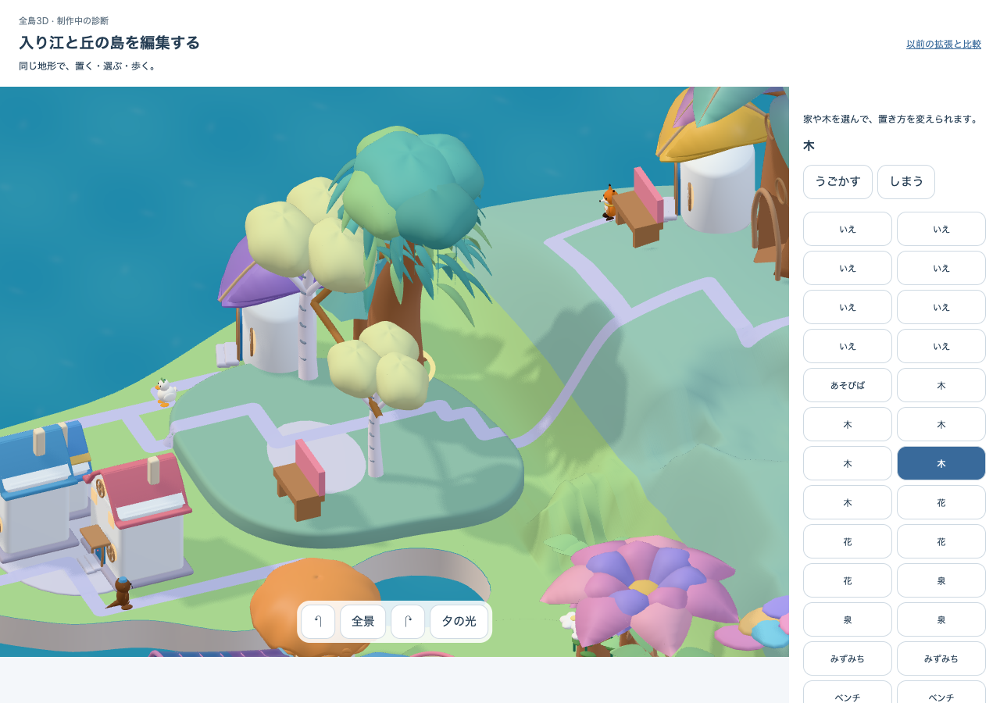
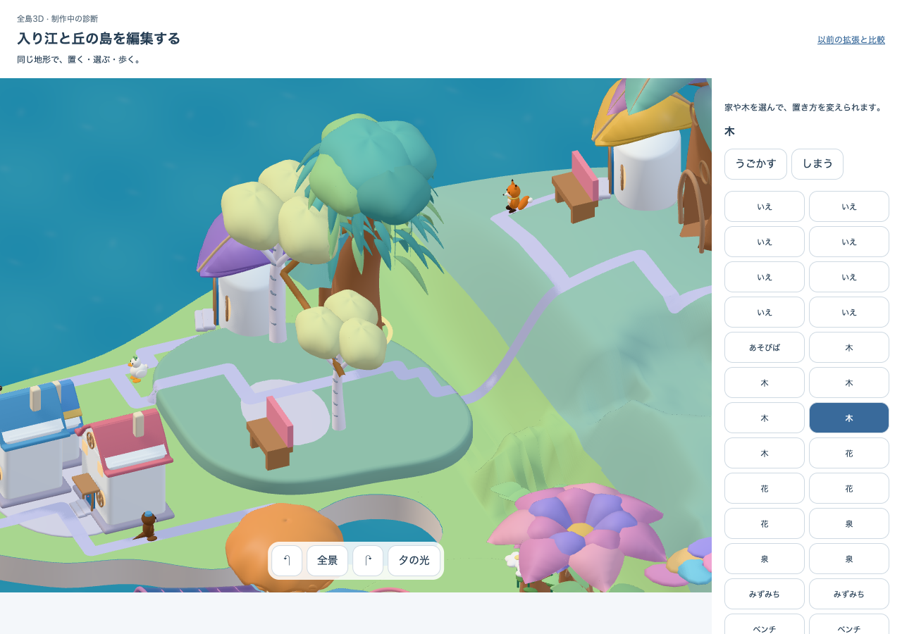
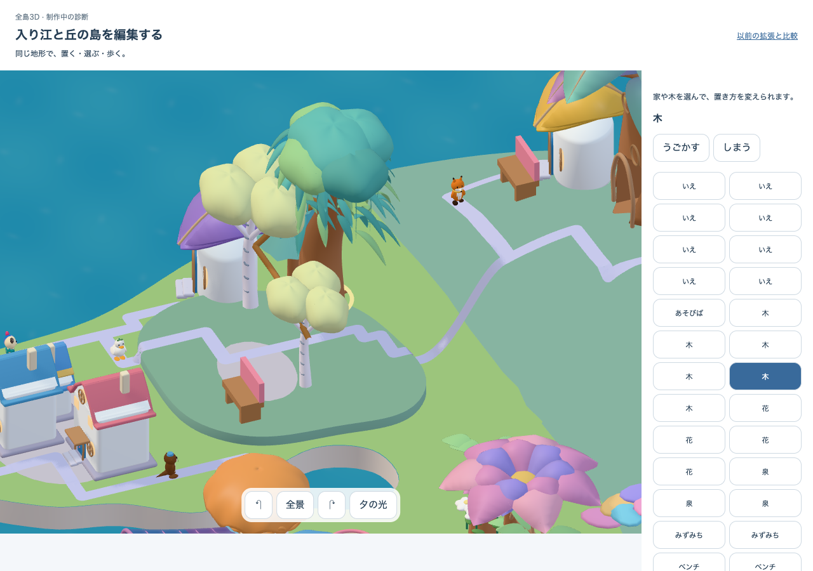
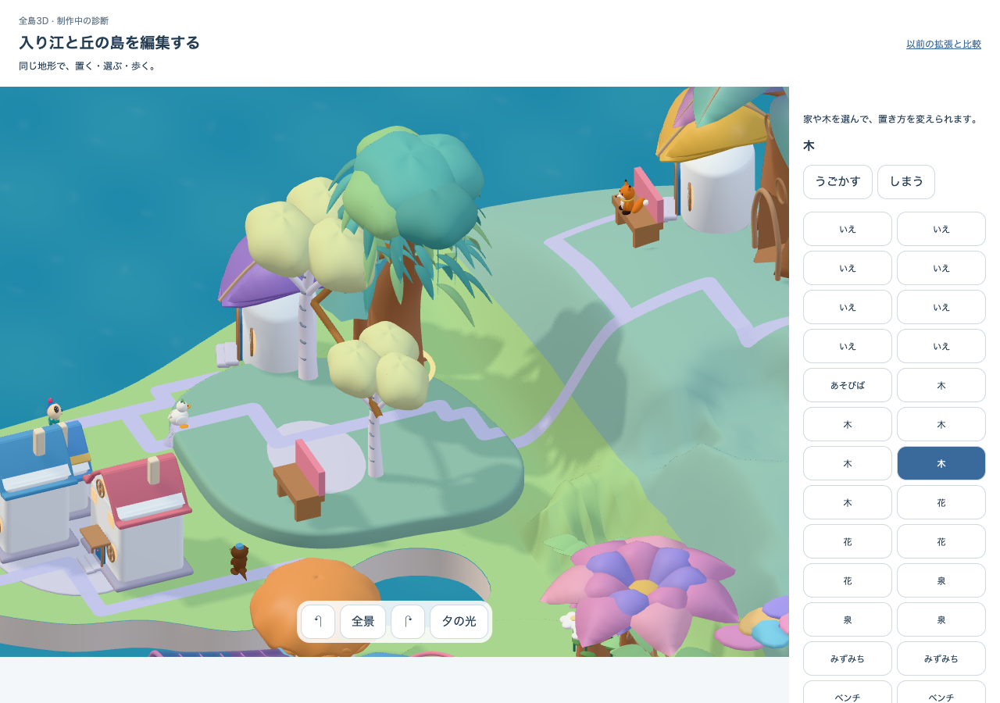

床の細い線 · 原因を絞る実画面比較
影を受けない設定でも丘の細い点線状の境界は残った。照明の影響を外した同じ床では、その線は見えなくなった。大きな木とベンチの影は影設定に応じて消え、復元すると戻った。
見えている線は照明を受ける材質の応答に依存する。法線や材質の境目を次に調べる。まだ法線だけが原因と確定しておらず、隙間や別面の干渉も個別には否定していない。
同じ実Three Scene・floor geometry、camera、光、所有、歩行を照合。診断後は元のmaterialとshadow flag、prototype hookを復元。unlit用の2materialはdispose済み。
住人は動いており画像全体のpixel一致は要求しない。性能・美術・M1の合格ではなく、修正もまだ行っていない。
{'build': 'authored-shoulder-c2', 'appVersion': 'authored-shoulder-c2:79e9300a-ec58-4cfc-83fc-5dc24d2d4092', 'candidate': 'native05-authored-cove-shore-v4+source-shading-v1', 'sourceRevision': 'native05-source-shading-v1:080f5fa9acc68fd4b3f182249cec65b9c487d2522327ad7977d78023822362df'}
元の照明と影
3d0b194554edeccf2e138dce25f22327a94ec443063e28d036fd5d904df19f80床が影を受けない
7961ab3b134dfcee0fd12a581b11f40857b99f767ac1760203922268c63d740e床だけ照明の影響を外す
b0c0cd68a2ce13f00093db2cfa7c3430f6273e972e99c3999207725c26888efa元の表示へ復元
c93f101594cce0459862aff05828ac0e23806842d3a422d2cf7b16eb54247c36 Original evidence · Review record